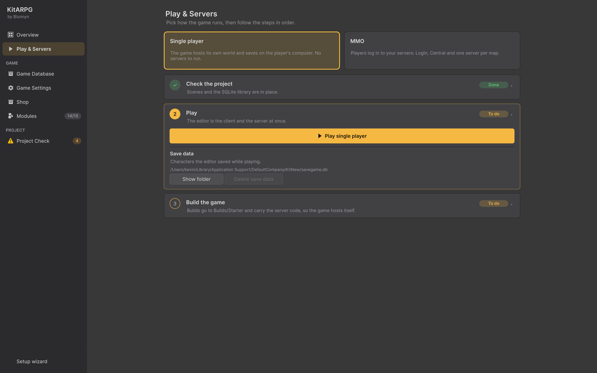

Play & Servers
Play & Servers es donde eliges cómo corre tu juego, un jugador o MMO, y sigues pasos numerados para jugarlo desde el editor. En MMO compila e inicia los servicios (Login, Central y los servidores de mapa), configura la base de datos, muestra el estado de cada servicio y su registro, y juega con uno o dos jugadores.
Dónde está

- KitARPG > Play and Servers, o
- la página Play & Servers de la ventana KitARPG (
Ctrl/Cmd+Shift+K), segunda en la barra lateral.
En MMO, la barra lateral muestra On junto a la página cuando Login y Central responden los dos, y ... mientras inician.
Elegir un jugador o MMO
La página se abre con dos tarjetas grandes. Haz clic en una para elegirla:
| Tarjeta | Descripción que se muestra | Qué significa |
|---|---|---|
| Single player | "The game hosts its own world and saves on the player's computer. No servers to run." | El juego es cliente y servidor a la vez y guarda en un archivo SQLite local. Consulta Inicio rápido: un jugador |
| MMO | "Players log in to your servers: Login, Central and one server per map." | Los jugadores inician sesión en tus servicios y se encuentran en mapas compartidos. Consulta Inicio rápido: MMO |
La elección se guarda en el asset de configuración Assets/Settings/Resources/KitARPGSettings.asset (el campo mode de KitSettings). Las builds hechas desde los menús de build del kit ponen el modo que necesitan y dejan el tuyo de vuelta al terminar.
Si el proyecto todavía no tiene asset de configuración, la página muestra una tarjeta No settings yet con Create settings. Presiónalo para crear el asset.
El asset de configuración también tiene estos campos, que puedes editar en el Inspector:
| Campo | Qué hace | Por defecto |
|---|---|---|
Mode (mode) |
Online (MMO) o Single Player | Online |
Login Url (loginUrl) |
Dónde llegan los clientes al servicio Login | http://127.0.0.1:5100 |
Central Url (centralUrl) |
Dónde llegan los clientes a Central | http://127.0.0.1:5200 |
Save File (saveFile) |
El guardado de un jugador, un archivo SQLite en la carpeta de datos persistentes del jugador | savegame.db |
Cómo funcionan los pasos
Bajo las tarjetas vienen pasos numerados. Cada paso es una tarjeta con un número, un título, una línea de resumen y una etiqueta:
| Etiqueta | Significa |
|---|---|
| Done | El paso está completo. Su tarjeta se pliega y el número se vuelve una marca de verificación |
| To do | Todavía no está hecho. El primer paso sin hacer tiene borde dorado y se abre solo |
| Locked | Antes hay que terminar un paso anterior. Los pasos bloqueados no se abren |
Haz clic en el encabezado de un paso para abrirlo o plegarlo. La flecha de la derecha (▸ o ▾) muestra cuál.
Pasos en un jugador
1. Revisar el proyecto
Resumen: "Scenes and the SQLite library are in place." o "Something the game needs is missing."
| Fila | Hecha cuando | Solución |
|---|---|---|
| Scenes in Build Settings | La primera escena activa en Build Settings es Title. El detalle lista las escenas |
Use starter scenes pone las escenas de la muestra en Build Settings en el orden correcto |
| SQLite library for this platform | La biblioteca nativa de SQLite para tu editor está en Plugins/SQLite (macOS/libe_sqlite3.dylib, Windows/e_sqlite3.dll o Linux/libe_sqlite3.so) |
Vuelve a importar el paquete de KitARPG |
2. Jugar
Resumen: "The editor is the client and the server at once." Bloqueado hasta que el paso 1 esté hecho.
- ▶ Play single player abre la escena Title y entra en el modo Play con el argumento
-mode single. Si la escena abierta tiene cambios sin guardar, Unity pide guardarlos antes. En gris mientras ya estás jugando. - Save data muestra la ruta del archivo de guardado que usa el editor.
- Show folder abre la carpeta de datos persistentes en Finder o en el Explorador.
- Delete save data pregunta "Delete every single player character saved by the editor?" y borra el archivo de guardado con sus acompañantes
-waly-shm. En gris en el modo Play o cuando no hay guardado.
3. Compilar el juego
Resumen: "Builds go to Builds/Starter and carry the server code, so the game hosts itself."
| Botón | Resultado |
|---|---|
| Build for Mac | Builds/Starter/MacSinglePlayer/KitARPG.app |
| Build for Windows | Builds/Starter/WindowsSinglePlayer/KitARPG.exe |
La carpeta Builds se crea junto a la carpeta de tu proyecto de Unity, en la carpeta que la contiene. Consulta Builds.
Pasos en MMO
1. Revisar el proyecto
El resumen cuenta lo que está listo, por ejemplo "3 of 5 ready", y dice "Scenes, .NET, the services and the map server build are ready." cuando están las cinco.
| Fila | Hecha cuando | Botón |
|---|---|---|
| Scenes in Build Settings | Title es la primera escena activa y Server está en la lista |
Use starter scenes |
| .NET 10 SDK | dotnet --list-sdks informa un SDK 10.x. El detalle lista lo instalado, o "dotnet was not found" |
Get .NET abre la página de descarga de .NET 10. Check again vuelve a buscar dotnet después de instalarlo, sin reiniciar Unity |
| Services source | Se encontró la carpeta con KitARPG.Services.slnx. El detalle muestra su ruta |
Browse te deja elegirla a mano |
| Services built | Login, Central y el lanzador están compilados. "Building..." mientras corre | Build services, o Rebuild una vez compilados. En gris sin el código o sin el SDK |
| Map server build | La build local del servidor de mapa existe y tiene la escena de cada mapa. Gris cuando todos los mapas corren en el editor y la build no hace falta | Build, o Rebuild una vez compilada |
Cuando falla la compilación de los servicios, una caja roja bajo la fila muestra hasta ocho líneas del error. Si no se pudo leer ninguna, dice "dotnet build failed. Run it in a terminal to see why."
El editor busca el código de los servicios en este orden: una carpeta que elegiste con Browse (recordada por proyecto), Services junto al proyecto de Unity, Services dentro de él, y Assets/Blunnyn/KitARPG/Services~, donde el kit desempaqueta los servicios que vienen en el paquete.
Pueden aparecer dos filas más:
- N kit updates (advertencia): "Things this kit adds that the game doesn't have yet. Apply them before building the map server, so both have them." Review abre Overview.
- In-game shop, cuando el servicio Shop está en el proyecto: apagado ("Off. The Shop service is optional."), corriendo, o prendido pero sin correr. Open Shop abre la página Shop.
La build del servidor de mapa va a Builds/Starter/MacServer/KitARPGServer.app en Mac y a Builds/Starter/WindowsServer/KitARPGServer.exe en Windows. Es una build de jugador normal con el código de servidor compilado adentro, que el lanzador corre en modo batch sin gráficos; no necesita el módulo Dedicated Server de Unity. Después de cada build, un archivo KitARPGScenes.txt junto a ella lista sus escenas, y así la página sabe que le falta un mapa agregado después.
La fila dice "Missing the scene of a map: ..." cuando se agregó un mapa después de la última build. Los jugadores que viajen ahí terminarían de vuelta en el inicio de sesión. Vuelve a compilar el servidor de mapa.
2. Elegir la base de datos
Bloqueado hasta que el paso 1 esté hecho. El resumen muestra la elección actual.
Un interruptor de dos posiciones elige dónde guardan los servicios las cuentas, los personajes y los ítems:
| Elección | Úsala para |
|---|---|
| SQLite: a local file | Desarrollo y servidores pequeños. Nada que instalar. La página muestra la ruta del archivo, UserSettings/KitARPG/data/kitarpg.db por defecto |
| PostgreSQL: for production | Servidores reales, o para desarrollar contra la misma base de datos con la que publicas |
Con PostgreSQL elegido, una fila de estado dice Connection ready con la cadena de conexión (contraseña oculta) o No connection yet. Luego:
- Set up PostgreSQL... abre la ventana de configuración de PostgreSQL. Consulta Configurar PostgreSQL.
- Write the connection string by hand, un desplegable con un campo de texto. Debajo se muestra la forma esperada:
Host=localhost;Port=5432;Database=kitarpg;Username=kitarpg;Password=...
La base de datos no se puede cambiar mientras corren los servicios ("Stop the services to change the database.").
Keys: "Signing and map keys are made for this machine and kept in UserSettings/KitARPG." (las claves de firma y de mapas se crean para esta máquina). New keys crea una clave de firma nueva (32 bytes aleatorios, para firmar los tokens de inicio de sesión) y una clave de mapas nueva (16 bytes aleatorios, la que los servidores de mapa le muestran a Central) y las guarda. En gris mientras corren los servicios.
Consulta Base de datos para ver qué necesita cada base de datos en producción.
3. Iniciar los servicios
Bloqueado hasta que los pasos 1 y 2 estén hechos. El resumen dice "Login, Central and the maps, on this computer.", "Starting..." o "Running. Maps: town (1 player), ...".
Tres filas muestran cada parte con una luz (gris apagado, dorada iniciando, verde arriba):
| Servicio | Detalle | Puerto |
|---|---|---|
| Login | Cuentas y personajes | 5100 |
| Central | Sesiones, chat, gremios y mapas | 5200 |
| Maps | "Started by Central when someone enters", o los mapas que corren con su cantidad de jugadores | Un puerto por mapa, 7777 para town, 7778 para forest, 7779 para crypt |
Map in the editor elige dónde corren los mapas:
| Elección | Significado |
|---|---|
| None, every map runs from the map server build | Central inicia cada mapa desde la build. El valor por defecto |
| town: runs in this editor, to debug it (una línea por mapa) | Central espera que ese mapa venga del editor. Lo juegas con Play map server en el paso 4. Úsalo para depurar código de servidor con puntos de interrupción |
La elección no puede cambiar mientras corren los servicios.
Botones:
- Start services inicia el lanzador en modo sin pantalla con
UserSettings/KitARPG/launcher.json. Antes de iniciar, la página escribe los datos de tu base de datos del juego enUserSettings/KitARPG/gamedata.json, así Login crea los personajes con tus datos tal como están ahora. - Restart detiene los servicios y los inicia otra vez en cuanto sus puertos quedan libres (diez segundos como máximo). También hay un botón Restart en el encabezado del paso mientras está plegado.
- Stop detiene el lanzador, que cierra Login, Central y cada mapa que inició.
Los servicios se detienen solos cuando sales de Unity. Siguen corriendo entre recargas de scripts y el modo Play.
Advertencias que puede mostrar este paso:
| Advertencia | Significado | Solución |
|---|---|---|
| "Services from an earlier editor session are still running (process ...)" | Un lanzador iniciado por un editor que se cerró sin detenerlo ocupa los puertos. Solo Mac y Linux | Stop the old services |
| "The services or the map server were rebuilt after they started, so they still run the old code. Restart them." | Compilaste después de iniciar | Restart |
| "Something else is using port ..." | Otro programa escucha en el puerto de Login o de Central, a menudo servicios iniciados desde una terminal | Detén primero ese programa |
4. Jugar
Bloqueado hasta que los servicios corran.
- ▶ Play client abre la escena Title y juega como cliente de los servicios locales (
-mode online -login http://127.0.0.1:5100 -centralUrl http://127.0.0.1:5200). - Play map server: town aparece cuando un mapa corre en el editor. Abre la escena
Servery juega como servidor de ese mapa, conectado a Central con la clave de mapas. - Two players: Play with two abre un segundo editor e inicia sesión en los dos. Consulta Jugar con dos jugadores.
- Built client: Open inicia la build del cliente junto al editor, cuantas veces quieras, para tener más jugadores a la vez. Build o Rebuild la crea (
Builds/Starter/MacClient/KitARPG.appoBuilds/Starter/WindowsClient/KitARPG.exe). Los clientes de release se compilan con IL2CPP, así que esta build tarda más que una con Mono.
El registro
La tarjeta Log de abajo se despliega para mostrar las últimas 120 líneas de la salida de los servicios. Open log file abre UserSettings/KitARPG/services.log en tu editor de texto. El registro empieza vacío cada vez que se inician los servicios.
Paso a paso: iniciar los servicios MMO
- Abre Play & Servers y haz clic en la tarjeta MMO.
- En el paso 1, corrige cada fila roja. Lo habitual: presiona Use starter scenes, instala el SDK de .NET 10 si te lo pide (luego Check again), presiona Build services y espera, y luego presiona Build en Map server build y espera a que termine la build de Unity.
- En el paso 2, deja SQLite: a local file por ahora.
- En el paso 3, deja Map in the editor en None y presiona Start services. Las luces de Login y Central se ponen verdes después de unos segundos.
- En el paso 4, presiona ▶ Play client. En la pantalla de título, registra una cuenta, crea un personaje y entra al mundo. Central inicia el servidor del mapa
townla primera vez que alguien va ahí. - Cuando cambies scripts o escenas, vuelve a compilar el servidor de mapa y presiona Restart. La lista To do de Overview te avisa cuándo.
Configurar PostgreSQL
Set up PostgreSQL... en el paso 2 abre la ventana PostgreSQL Setup. Trabaja con el lanzador (KitARPG.Launcher --postgres), así que compila primero los servicios; sin ellos la ventana dice "The services aren't built yet; they do the talking to PostgreSQL. Build them in Play & Servers first."
El interruptor de arriba elige dónde corre PostgreSQL: A server I run (un servidor propio) o Docker on this computer (Docker en esta computadora).
A server I run
Where is PostgreSQL?
| Campo | Qué hace | Por defecto |
|---|---|---|
| Host | Dirección del servidor. localhost para esta computadora |
localhost |
| Port | Su puerto | 5432 |
| SSL | Prefer, Require o Disable. Los servidores alojados (un VPS, RDS, Supabase, Neon) suelen necesitar Require |
Prefer |
Luego elige Create the database for me (créame la base de datos) o Use a database I have (usar una base de datos que tengo).
Con Create the database for me:
- Completa Admin login (User, Password): una cuenta con permiso para crear bases de datos y usuarios. Se usa una vez y nunca se guarda. En Mac con Homebrew o Postgres.app el administrador suele ser tu propio usuario, sin contraseña. Usuario por defecto:
postgres. - Completa For the game: Database (
kitarpg), User (kitarpg) y Password. La contraseña empieza siendo una aleatoria; Show la muestra y New crea otra. - Presiona Create and use. La ventana crea la base de datos y el usuario, prueba el inicio de sesión y, cuando funciona, completa la cadena de conexión en Play & Servers y la cambia a PostgreSQL.
Con Use a database I have, completa Login (Database, User, Password) y presiona Test and use.
El mensaje bajo el botón dice qué pasó, o por qué falló. La ventana se rinde después de un minuto sin respuesta ("PostgreSQL didn't answer in a minute.").
Docker on this computer
Necesita Docker Desktop (OrbStack también funciona). Create and use corre PostgreSQL 17 (postgres:17-alpine) en un contenedor llamado kitarpg-postgres, con sus datos en el volumen kitarpg-pgdata, escuchando en 127.0.0.1 en el primer puerto libre desde 5432. Pone una contraseña aleatoria nueva al usuario kitarpg y completa la cadena de conexión en Play & Servers.
El contenedor sigue corriendo después de cerrar Unity y se reinicia con Docker. Presionar Create and use otra vez reutiliza el contenedor y le da una contraseña nueva. La primera vez, descargar la imagen puede tardar un minuto.
Mensajes que puedes ver:
| Mensaje | Solución |
|---|---|
| "Docker was not found. Install Docker Desktop, or write the connection string of your own server." | Instala Docker Desktop, o usa A server I run |
| "Docker is installed but not running. Open Docker Desktop and try again." | Inicia Docker Desktop |
| "The container kitarpg-postgres doesn't publish port 5432. Remove it in Docker Desktop and try again." | Borra el contenedor viejo en Docker Desktop |
| "PostgreSQL didn't start. Its log is in Docker Desktop, container kitarpg-postgres." | Lee el registro del contenedor en Docker Desktop |
La cadena de conexión, con su contraseña, se guarda en UserSettings/KitARPG/launcher.json, fuera de los assets del proyecto y fuera del control de versiones por defecto.
Jugar con dos jugadores
Play with two (paso 4), Play with two players (Overview) y KitARPG > Play With Two Players hacen lo mismo:
- Si el modo no es MMO, un diálogo dice "Two players need the MMO mode, where players meet on servers." y abre Play & Servers.
- Si falta el paquete Multiplayer Play Mode de Unity (
com.unity.multiplayer.playmode), un diálogo ofrece Install. Presiona el botón otra vez cuando esté instalado. - Si los servicios no corren, los inicia. Si no están compilados, te pide compilarlos primero.
- Abre Player 2, un segundo editor del mismo proyecto, mediante Multiplayer Play Mode. La primera vez, ese editor importa el proyecto, lo que tarda un rato.
- Cuando Login responde y Player 2 está abierto, los dos editores entran en Play. Cada uno inicia sesión con su propia cuenta de prueba, crea su personaje si no existe y entra al mundo sin la pantalla de título.
Las cuentas de prueba son kitplayer1 y kitplayer2, con los personajes Aria y Bram, una contraseña aleatoria creada para esta máquina, el primer modelo de jugador y su primera clase. Se guardan en UserSettings/KitARPG/quickplay.json; edita ese archivo para usar otros nombres. Solo se crean en tus servicios locales.
Si Player 2 no puede iniciar solo, la Console lo dice y Unity abre Window > Multiplayer > Multiplayer Play Mode: prende Player 2 ahí y presiona el botón otra vez. Si nada está listo después de 15 minutos, la Console lo informa.
Los mapas corren desde la build del servidor de mapa, o en este editor cuando se elige uno en Map in the editor.
Archivos que usa esta página
Todos están en UserSettings/KitARPG/, por usuario y fuera del control de versiones:
| Archivo | Contiene |
|---|---|
launcher.json |
Puertos, claves, base de datos, mapas y rutas que lee el lanzador |
data/kitarpg.db |
La base de datos SQLite de los servicios locales |
gamedata.json |
Los datos del juego que leen Login y Central, escritos en cada inicio |
services.log |
La salida de los servicios |
launcher.pid |
El lanzador en marcha, para que el editor lo encuentre después de reiniciar |
quickplay.json |
Las cuentas de prueba para dos jugadores |
La configuración del lanzador lista los mapas y sus puertos. El editor empieza con town en 7777 (iniciado con los servicios), forest en 7778 y crypt en 7779, y el lanzador agrega guild_hall en 7780. Cada otro mapa de la base de datos del juego recibe el siguiente puerto libre cuando inicias los servicios, así que un mapa nuevo no necesita configuración. Para cambiar puertos, edita launcher.json con los servicios detenidos. Consulta Lanzador y Configuración.
Consejos
- Deja Map in the editor en None salvo que estés depurando código de servidor. Jugar un servidor de mapa en el editor significa que el editor no puede ser también cliente; para eso usa Built client o dos jugadores.
- Después de cambiar clases, ítems u otros datos que Login usa para crear personajes, reinicia los servicios para que lean los datos nuevos del juego.
- Play en la barra de herramientas normal de Unity no pasa los argumentos de la ventana. Usa los botones de esta página o de Overview, o empieza desde la escena Title.
Errores comunes
- Iniciar los servicios sin build del servidor de mapa. Login y Central inician, pero ningún mapa se registra y los jugadores se quedan en la pantalla de título. Compila el servidor de mapa.
- Olvidar reiniciar después de compilar. Los servicios siguen corriendo el código viejo. El paso muestra una advertencia y Overview lista Restart the services.
- Puertos ocupados por servicios iniciados desde una terminal. Detén esos primero; dos lanzadores no pueden compartir los puertos.